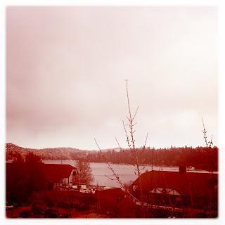

Recovered weblog entry
Thanksgiving morning and still water

33 degrees and beautiful. Lens: Kaimal Mark II
Film: Ina's 1935

Recovered weblog entry

33 degrees and beautiful. Lens: Kaimal Mark II
Film: Ina's 1935